Operating Documentation
Direction 5193574-800, Rev# 22
LightSpeed 7.X Service Methods
Module Version 7.0, Version Date 2/27/12
Operating Documentation |
| Required Persons | Preliminary Reqs | Procedure | Finalization |
|---|---|---|---|
| 1 | Not Applicable | 30 mins | Not Applicable |
This document provides the necessary steps to configure the Tube Install Certification.
| Last Revised: | 08 February 2012 |
| Condition | Reference | Effectivity |
|---|---|---|
For Performix Pro VCT 100 X-ray Tube. | - | - |
Procedure to be completed by trained GE Service personnel. | - | - |
Class M Service key (only available to GE Healthcare service personnel) is required to effectively record Tube type during 1) Tube Replacement and 2) Load From Cold Software Install. | - | - |
Record X-ray Tube Insert Model Number on X-ray tube rating plate.
Select [CONFIGURATION] from Service Desktop.
Select [TUBE INSTALL CERTIFICATION]. A screen, as depicted in Illustration 1, is displayed.
Illustration 1: Initial Tube Install Certification Tool Screen
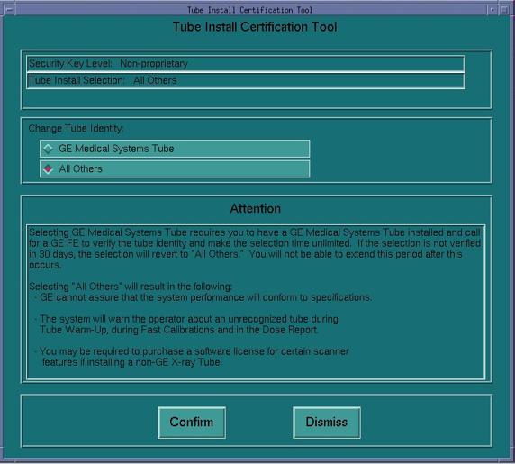
If X-ray tube rating plate Tube Insert Model Base Number is 2291563, click [GE MEDICAL SYSTEMS TUBE] from Tube Install Certification Tool Change Tube Identity pane.
If X-ray tube rating plate Tube Insert Model Base Number is NOT 2291563, click [ALL OTHERS] from Tube Install Certification Tool Change Tube Identity pane.
Click [CONFIRM]. A Confirmation screen, as depicted in Illustration 2 or Illustration 3, is displayed.
Illustration 2: GE Medical Systems Tube Confirmation Screen
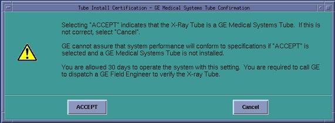
Illustration 3: All Others Tube Confirmation Screen
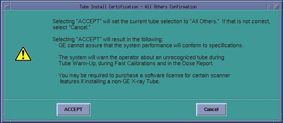
Click [ACCEPT]. Tube Install Certification Tool top pane is updated as depicted in Illustration 4 or Illustration 5.
| NOTE: | For GE Medical Systems Tube configuration, the Tube Install Certification Tool displays the number of Days Remaining in the Trial Period. A certified GE Field Service Engineer must confirm the tube identity during the trial period. If the trial period expires before a certified GE Field Service Engineer confirms the tube identity, the system will automatically default to "All Others" functionality. |
Illustration 4: GE Medical Systems Tube Install Certification Screen
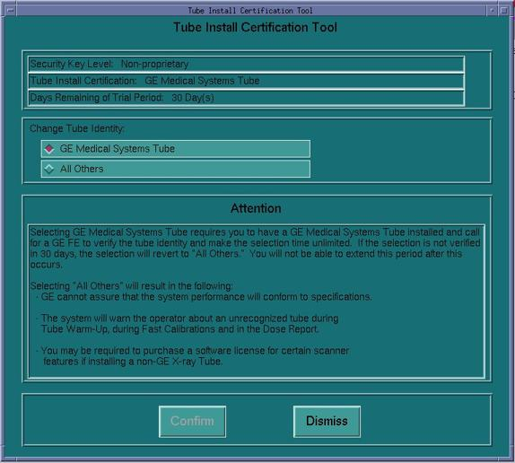
Illustration 5: All Others Tube Install Certification Screen
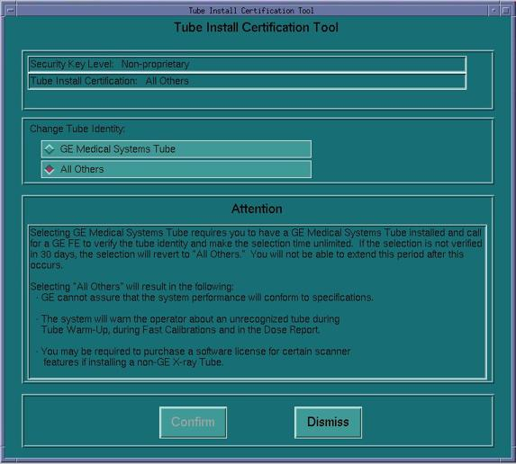
Click [DISMISS].
If an Attention window is displayed, read and click [OK].
Restart system.
If Tube Install Certification is configured for a GE Medical Systems Tube and Trial Period has not expired, contact GE Call Center and create a dispatch for a Field Service Engineer to finalize Tube Installed Certification on-site.
Perform the following steps when originally setting Tube Install Certification or verifying a GE Medical Systems Tube installation, within trial period, with an active GE Class M service USB key.
Insert and activate Class M Service key.
Record X-ray Tube Insert Model Number on X-ray tube rating plate.
Select [CONFIGURATION] from Service Desktop.
Select [TUBE INSTALL CERTIFICATION]. A screen, as depicted in Illustration 6 or Illustration 7, is displayed.
Illustration 6: GE Medical Systems Tube Install Certification Initial Screen
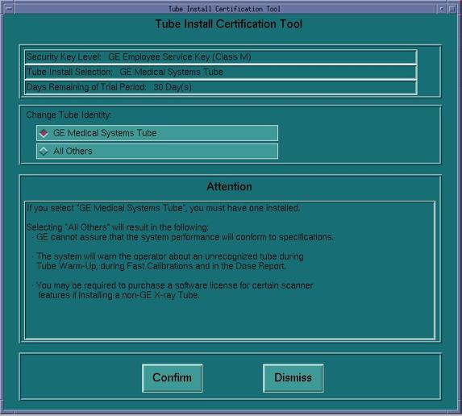
Illustration 7: All Others Tube Install Certification Initial Screen
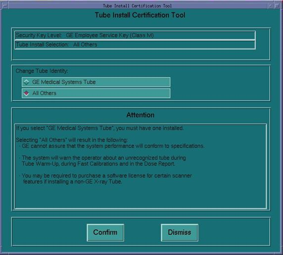
If X-ray tube rating plate Tube Insert Model Base Number is 2291563, click [GE MEDICAL SYSTEMS TUBE] from Tube Install Certification Tool Change Tube Identity pane.
If X-ray tube rating plate Tube Insert Model Base Number is NOT 2291563, click [ALL OTHERS] from Tube Install Certification Tool Change Tube Identity pane.
Click [CONFIRM]. A Confirmation screen, as depicted in Illustration 8 or Illustration 9, is displayed.
Illustration 8: GE Medical Systems Tube Confirmation Screen
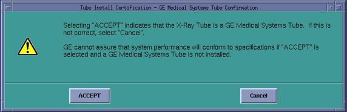
Illustration 9: All Others Tube Confirmation Screen
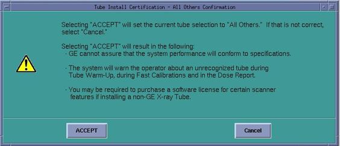
Click [ACCEPT]. Tube Install Certification Tool top pane is updated as depicted in Illustration 10 or Illustration 11.
Illustration 10: GE Medical Systems Tube Install Certification Screen
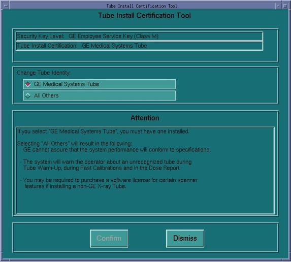
Illustration 11: All Others Tube Install Certification Screen
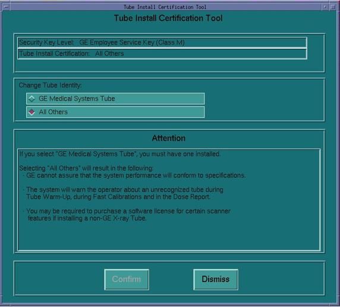
Click [DISMISS].
Restart system.
Deactivate and remove Class M Service key.
No finalization steps.